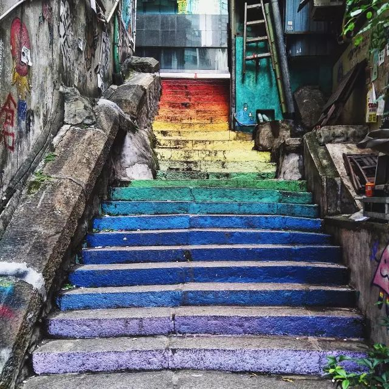

小北我对城市的边边角角总有种说不上来的喜欢，所以这次给大家带来了一份城市旅拍攻略，帮你们提提格调，做个有故事的女（男）同学 ~
选择细节颇具特色、整体风格又趋于统一的建筑群
可以再来一张手机透视建筑照
先拍摄第一张照片，将照片放大，再将手机中照片的建筑部分和实际建筑重合
找到一个纯色墙面，如果有一条栏杆或者有色的斜线那就再好不过了，摆好手机，等待行人！
待行人走过，快速抓拍！！手要快！！挑一张人物在画面比例中占据“黄金位置”的皂片稍加修饰，搞定！
看到好看的街道指示牌，停下来！多换几个角度，用它来辅助构图，效果绝对错不了！
既然都远行了，那就慢慢走，用心看，不要放过一个角落

如果刚好下起了雨，那就算错过一集海贼王也绝对不能错过这场雨！！坐上一辆双层巴士（ 单层也OK，高点就行 ~ ），对着窗外找好角度固定手机，快速抓拍驶过的小汽车 ?
透过车窗，记录匆匆世界
找一水滩，怼着拍倒影
夜幕降临，又该全军出击了！！
找一座天桥，最好用三脚架稳稳地固定手机（ 实在没有的话，像我一样找个能靠的地方就行 ~ ），并设置快门速度4s（ 手机可以打开内置专业模式或借助第三方app实现 ~ ）
几乎每个城市都有为了梦想而歌唱的流浪歌手，地下道、商场外、天桥上... 走累了，就安静的听他们唱一曲吧 ~
晚上，不去当地的夜市走一走，那就相当于没去过这座城啊
找一个制高点，俯瞰整个夜市长街，那是另一种感觉 ~ 当然，晚上出门更要注意安全哈！

噢啦 ~ 今天的旅拍教程之城市篇先到这里哈，希望你们喜欢，拜了个拜 ~
50人觉得很赞！